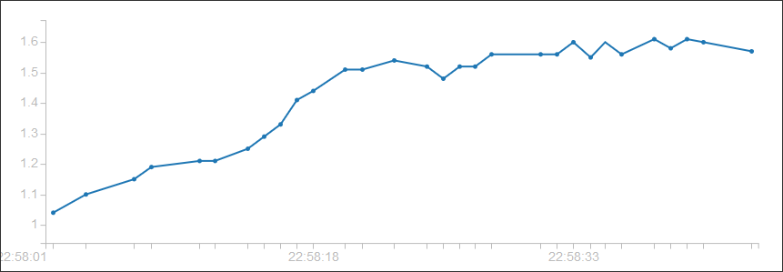
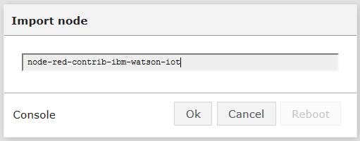
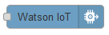
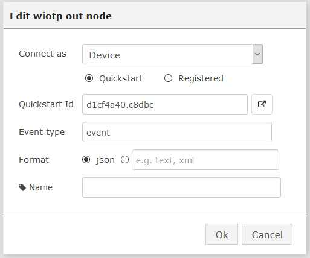
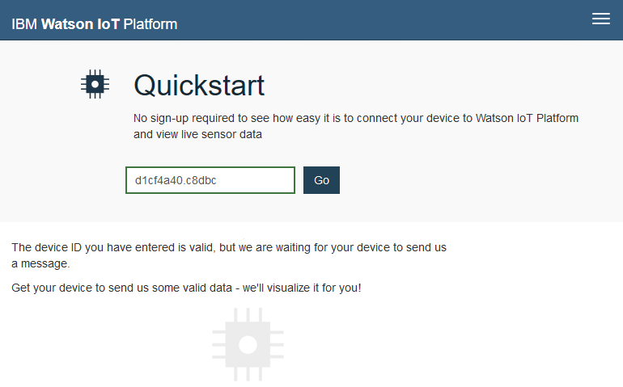
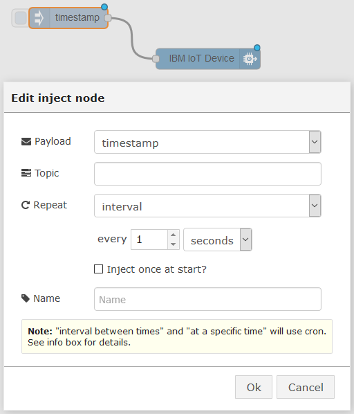
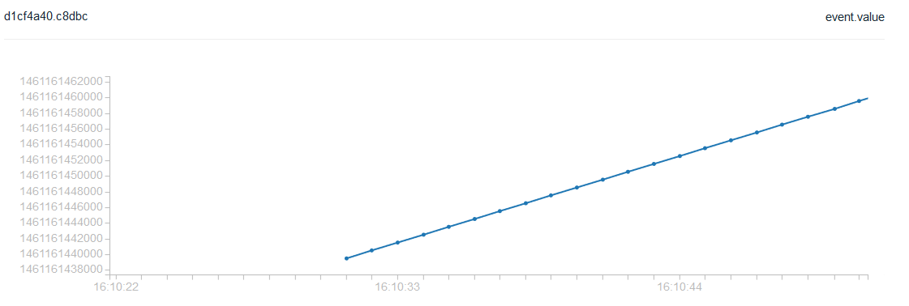

Charts in cloud
This tutorial shows how to build a simple chart on the cloud with a simple node that send values to the cloud.
Here how the result looks like:

For this tutorial, we use the IoT Bluemix cloud from IBM and a node also provided by IBM to send datas.
IBM offers a GREAT idea named “QuickStart” where you can get a result without all the pain of registering the service. First give a seamless result to the customer, then if he wants more you can ask him to invest some time (or money). Great lesson a lot of cloud service providers should ear.
Install the node
Click the right menu in the Node-RED web page. Click Import > node.

Type node-red-contrib-ibm-watson-iot in the edit box and click the OK button:

This imports a third party software. The installation may take minutes (a progress bar shows the progress), depending on what is already installed on your device.
At the end, click the reboot button to restart the device.
Now you can find this node in the palette (use the filter to find it):

Drag’n drop it on the workspace.
Double click it:

Just give an interest to the button below you can click to get the cloud bluemix chart:
all these technical datas should normally not appear in a quickstart node that provide a seamless user experience.

Send data and build a chart
Now you can send any numeric value. Let’s build the simpliest flow: add an “inject” node and set it to send the current date as a number every one second:

And look the beautiful result:

Beyond this Quickstart mode, IBM offers a full featured cloud for IoT.
Where to go now
- Learn more about IBM IoT Bluemix: http://discover-iot.eu-gb.mybluemix.net
- Get a full documentation on the Node: https://www.npmjs.com/package/node-red-contrib-ibm-watson-iot
- Discover other IoT cloud offers with the “Use IoT platforms” tutorial.